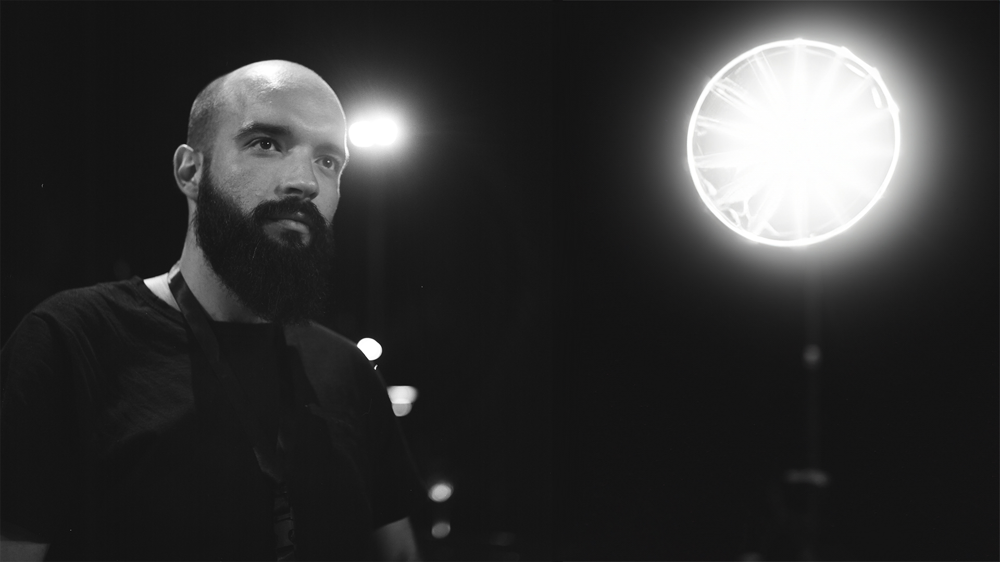

Esko Duraki is a photographer, who specializes in using unconventional lighting and locations for his
photography, which is with the use of minimal gear. Esko graduated from University of Prishtina with a BFA
in Graphic Design and Photography. While he is especially known for his rave photographs and work in the
concert industry, his client work includes stock and food photography, ecommerce, lifestyle, fashion and
corporate. Esko Duraki is based in Kosovo and is available for photo commissions worldwide.